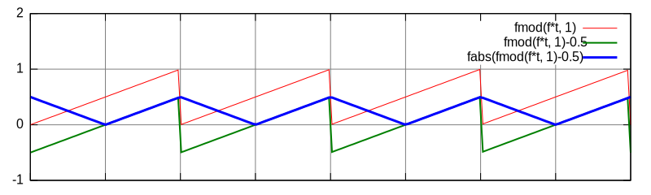
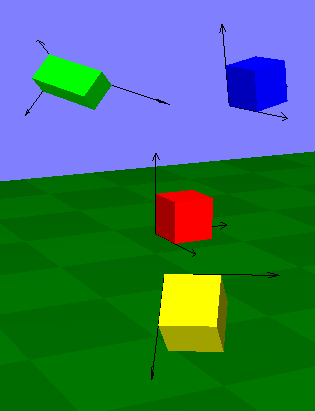

A láthatatlan zongorista
Czirkos Zoltán · 2015.02.18 · Frissítve: 2015.02.15
A láthatatlan zongorista életre keltése egy kis OpenGL 3D programozással.
Az adventi naptárban a hangokhoz és a háromdimenziós grafikához is szerepelt egy-egy trilógia, amelyek e témakörök alapjait, igyekeztek bemutatni. Rakjuk össze a kettőt: írjunk egy programot, amely zenél, és rajzol is! Keltsük életre a láthatatlan zongoristát, aki eljátssza nekünk Mozart Török indulóját, vagy bármit, amit szeretnénk! (Meg aminek a kottáját a neten megtaláljuk.)
Ehhez két új dologra lesz szükségünk:
- Egy olyan programmodulra, amely beolvas egy MIDI fájlt, mert abból lesz a kotta.
- Egy olyan modulra, amely kirajzol 3D-ben egy zongorát.
A többi adott. A szintetizátor megvan múltkorról. A kettőt szinkronizálni már majdnem gyerekjáték: amikor egy hang meg van szólaltatva, akkor a zongora billentyűjét elmozdulva kell kirajzolni.
1A MIDI fájlok
A MIDI a Musical Instrument Digital Interface rövidítése. Ez egy szintetizátorok és egyéb
digitális hangszerek által használt szabvány: arra való, hogy azok egymással és számítógépekkel
kommunikálhassanak. A MIDI buszon az eszközök különféle üzeneteket küldenek egymásnak,
úgymint hangszer kiválasztása, hang megszólaltatása, tempó beállítása stb. Egy fájlformátum is
része ennek: a .mid fájlokban ezen események vannak rögzítve, a keletkezési
idejük mellett. Bár gondolhatunk úgy is a MIDI fájlokra, mintha maga a kotta lenne eltárolva
bennük, de ez nincs így. Szerencsére a fájlokban ennél számunkra sokkal alkalmasabb módon van
eltárolva a zene: konkrétan az szerepel mindegyik hangra, hogy melyik időpontban szólal meg, és
melyik időpillanatban hallgat el. Ezeket az eseményeket sorrendben „eljátszva” a fájlban tárolt
zenét rekonstruálhatjuk, a szintetizátorunk tudásának megfelelő minőségben.
A .mid egy bináris fájlformátum, amelyben ezek az adatok néhány bájtos darabokban,
chunk-okban tárolódnak. Hogy ennek a részleteibe ne nagyon kelljen belemenni, a
midicsv programot hívhatjuk segítségül,
amely szövegfájllá alakítja ezeket. A Boci, boci tarka
első pár hangja, amely MIDI formátumban így fest:
00000000 4D 54 68 64 │ 00 00 00 06 │ 00 01 00 01 │ 00 64 4D 54 MThd.........dMT 00000010 72 6B 00 00 │ 00 3E 00 FF │ 51 03 03 D0 │ 90 00 C0 00 rk...>. Q..А . . 00000020 00 90 3C 50 │ 32 80 3C 00 │ 32 90 40 50 │ 32 80 40 00 . <P2 <.2 @P2 @. 00000030 32 90 3C 50 │ 32 80 3C 00 │ 32 90 40 50 │ 32 80 40 00 2 <P2 <.2 @P2 @. 00000040 32 90 43 50 │ 64 80 43 00 │ 64 90 43 50 │ 64 80 43 00 2 CPd C.d CPd C. 00000050 64 FF 2F 00 │ d /.
A midicsv szöveges formátumában könnyebben olvasható számunkra is:
0, 0, Header, 1, 1, 100 fejléc, órajel 1, 0, Start_track 1, 0, Tempo, 250000 sebesség 1, 0, Program_c, 0, 0 1, 0, Note_on_c, 0, 60, 80 1, 50, Note_off_c, 0, 60, 0 1, 100, Note_on_c, 0, 64, 80 hang megszólaltatása 1, 150, Note_off_c, 0, 64, 0 1, 200, Note_on_c, 0, 60, 80 hang kikapcsolása 1, 250, Note_off_c, 0, 60, 0 1, 300, Note_on_c, 0, 64, 80 1, 350, Note_off_c, 0, 64, 0 1, 400, Note_on_c, 0, 67, 80 1, 500, Note_off_c, 0, 67, 0 1, 600, Note_on_c, 0, 67, 80 1, 700, Note_off_c, 0, 67, 0 1, 800, End_track 0, 0, End_of_file
Nézzük meg, itt mi mit jelent.
Start_track,End_track. A MIDI fájl sávokra oszlik, amelyek általában az egyes hangszerek szólamait szokták tárolni. Gyakran egy adott hangszer adatait is több sávra szedik (pl. zongora bal és jobb kéz), ezért a sávokat ömlesztve fogjuk kezelni.- Az első szám minden sorban a sáv sorszáma, ahol az esemény keletkezik; a második pedig a keletkezés ideje, mégpedig az órajel sorszáma szerint. (Az órajel szinkronizálja a MIDI buszon összekapcsolt hangszereket.)
Header. Ez nyitja a fájlt. Egy valamiért lesz fontos nekünk, az itt megadott utolsó szám miatt (100), ugyanis ez mutatja azt, hogy a MIDI fájlban hány órajel tartozik egy zenei negyed ütemhez.Tempo. Ez adja meg a zenedarab sebességét, egészen pontosan azt, hogy egy negyed ütem hány mikroszekundum ideig tart. Tehát egyben azt is, hogy hány mikroszekundum időt jelent aHeadermezőben megadott számú órajel. Egy MIDI fájlban többTempoparancs is lehet, mivel a zenedarab sebessége változhat.Note_on_c. Hang megszólaltatása. Az utána lévő első szám a csatorna (mivel egy sávon belül is több hang lehet egyszerre), a második a hangmagasság (ahol 60 jelenti a 264 Hz-es C hangot, és ettől fél hangonként megy fel és le), a harmadik pedig a hangerő (0 és 127 között). Gyakran a kikapcsolást isNote_on_cparancs mutatja, méghozzá 0 hangerővel.Note_off_c. Hang kikapcsolása. A mellette megadott hangerő lényegtelen.
Tehát ezt a fájlt kell beolvasni, és egy láncolt listát építeni a számunkra fontos parancsokból:
typedef enum EsemenyTipus {
hangbe, hangki, tempobeallit,
} EsemenyTipus;
typedef struct Esemeny {
EsemenyTipus tipus;
/* tempohoz */
int tempo;
/* hanghoz */
int ido;
int csatorna;
int hangmagassag;
int hangero;
struct Esemeny *kov;
} Esemeny;
A beolvasás szinte triviális, egy kis scanf()-elgetés megoldja a
dolgot. A program egyszeresen láncolt, elején strázsás listát épít. Ebbe a listába
az eseményeket idő szerint rendezve szúrja be, mivel a fájlban ezek sávonként
elválasztva szerepelnek. (Még jó, hogy előadáson szerepelt, hogyan kell rendezett listát
építeni. :P) Lejátszás közben jól fog jönni a rendezett lista, mivel azon az idő
múlásával együtt kell majd végighaladni.
2A vezérlés és a lejátszás
A lejátszás egyszerű megvalósításához érdemes a szintetizátor kódját átírni, de
csak éppen hogy: a hangokat itt nem tömbben, hanem listában kell tárolni. Egyszerre
több hang is megszólalhat, viszont az éppen megszólaltatott hangok száma folyamatosan
változik. A szintetizátor így a hangok strázsás, egyszeresen láncolt listáját kell
feldolgozza minden időszelethez. Felharmonikusok mixelgetése helyett most egy egyszerű
háromszöghullámot használ a program, amelyet az fmod() (fűrészfoghullám)
függvényből állít elő, egy abszolútérték képzésével:
for (iter = sz->hangok->kov; iter != NULL; iter = iter->kov) {
Hang *h = iter;
double s_ez;
double frek = 264 * pow(2, (h->hangmagassag - 60) * 1.0/12.0);
/* felharmonikusok helyett */
s_ez = fabs(fmod(frek * h->t, 1)-0.5) * 4 - 1;
...

Egyébként minden a szokásos. Hang keltésekor a hangok listájába be kell szúrni
egy új elemet, és indul az ADSR görbe a felfutással.
A beszúrást a program hang_keres() függvénye csinálja, amely ha
nem találja a listában a keresett, elvileg már előzőleg megszólaltatott hangot, akkor
beteszi, és azzal tér vissza. Előbb-utóbb minden hang elér a csend fázisba –
időnként a listát ki kell takarítani a hang_mar_nem_kell_torol() függvénnyel.
Ezeket a feladatokat a főprogram lejátszást vezérlő része végzi el. Ez létrehoz
magának egy 20 milliszekundumonként aktiválódó időzítőt, amelynek minden jelére
a MIDI parancsok listájából a következő adag parancsot végrehajtja.
Ehhez ki kell számolnia azt is, hogy az eltelt 20 ms hány MIDI órajelnek felel meg.
Ez a MIDI fájl Header és Tempo parancsaival megadott
adatok alapján már könnyen megy.
int felbontas = 20;
id = SDL_AddTimer(felbontas, timer, NULL);
while (!kilep) {
SDL_Event ev;
SDL_WaitEvent(&ev);
switch (ev.type) {
case SDL_USEREVENT:
SDL_LockAudio(); /* hogy addig ne fusson a masik szal */
hang_mar_nem_kell_torol(h);
midiorajel += (orajelpernegyed / (tempo/1000.0)) * felbontas;
while (l != NULL && l->ido < midiorajel) {
switch (l->tipus) {
case tempobeallit:
tempo = l->tempo;
break;
case hangbe:
ez = hang_keres(h, l->csatorna, l->hangmagassag);
ez->all = felfutas;
ez->hangero = l->hangero/128.0;
gombok[l->hangmagassag].nyomva++; /* kirajzolonak */
break;
case ...
A zongorát kirajzoló programrész dolgát megkönnyítendő, ez eltárolja azt is, hogy épp melyik billentyű (a MIDI hang sorszámát indexnek használva) van lenyomva.
Figyelni kell arra, hogy a hangot keverő, SDL által visszahívott függvény egy
külön szálon fut a főprogramtól. (Erről részletesen majd a Programozás alapjai 3. tárgyból lesz szó.)
Mivel mindkettő a hangok listáján dolgozik, előfordulhat az, hogy amíg a hang előállítása közben
épp végiglépked a listán a hang_callback() függvény, addig a fenti programrész
módosítja a listát, például töröl belőle egy elemet.
Az ilyesmivel szép kis lefagyásokat lehet csinálni, úgyhogy mindenképp
el kell kerülni. A fenti programrészben a lista módosítása (vagyis a következő néhány MIDI
parancs feldolgozása) előtt kiadott SDL_LockAudio() hívás azt jelzi az SDL-nek,
ha épp meghívná a keverő hang_callback() függvényt, akkor még várjon vele
egy kicsit. Ennek hatása az SDL_UnlockAudio() hívásig tart. Így nem lesz
gond a lista kezelésével: egyszerre csak az egyik programrész fér hozzá a hangok listájához,
megvárják egymást, hogy külön tudjanak dolgozni.
3Az OpenGL könyvtárak
Nézzük meg jobb oldalt a rajzot: az egész pianínót el kell forgatni, a billentyűit mozgatni (forgatni) kell, amikor le vannak nyomva, perspektívát kell számolni és így tovább. Lehetne bíbelődni ebben a programban is a négyszögekkel, forgatással, sorbarendezéssel, de ezt most hagyjuk: bízzuk a kirajzolást egy megfelelő grafikus környezetre és a videókártyára, az OpenGL-en keresztül.
Az OpenGL-es 3D programozásnál először az a furcsa, hogy rengeteg koordinátarendszert használ: akármelyik ezzel foglalkozó könyvet nyitjuk ki, mindenféle objektumkoordinátákról, világkoordinátákról, normalizált eszközkoordinátákról, vágási koordinátákról, ablakkoordinátákról és egyebekről írnak benne. Ha azonban tudjuk, hogy melyik műveletet (a testek forgatását, a nézetet meghatározó kamera elhelyezését, a perspektívát) melyik koordinátarendszerben kell elvégezni, akkor könnyű a dolgunk. Az egyszerűbb programokban pedig arra sem lesz szükségünk, hogy magunk adjuk meg a 4×4-es mátrixokat, amelyek az egyes koordinátarendszerek közötti transzformációkat adják meg, hanem ezt a GL (OpenGL) vagy a GLU (OpenGL Utility) függvényei létrehozzák azokat helyettünk.
Az OpenGL ugyanis nem is egy, hanem több függvénykönyvtárból áll. A legalapvetőbb szolgáltatásokat a GL könyvtár biztosítja. Ennek kiegészítése a GLU, amely sok mindenben megkönnyíti a programozó dolgát: például ad egy olyan függvényt, amelynek segítségével megadhatjuk, hogy a jelenetünkben hol legyen a kamera (néző), és melyik pont felé nézzen – ahelyett, hogy nekünk kellene forgatásokkal és eltolásokkal a megadott pontba helyezni a megjelenített tárgyakat. A két könyvtár szolgáltatásait egy harmadikkal is ki szokták egészíteni: az OpenGL ugyanis csak rajzolni tud, ablakot nyitni, billentyűzetet, egeret kezelni nem. A harmadik könyvtár, amelyik ezeket a feladatokat ellátja majd, az most is a jól bevált SDL lesz. Na de lássuk ezeket a koordinátarendszereket!
4Az OpenGL koordinátarendszerei
Nézzük meg, hogyan rajzolódik ki egy kocka a képernyőre!
Először is, a kocka ún. objektumkoordinátákkal rendelkezik. Ezeket az objektumkoordinátákat
magához a kockához viszonyítjuk. Például azt mondhatjuk, hogy legyen a kocka egyik sarka az origó, és
legyenek az x, y, z tengelyek ebben a rendszerben párhuzamosak
a kocka éleivel. Ha a kocka éle 1 egység hosszú, akkor az előbb kiválasztott
csúcsával szembeni csúcsának objektumkoordinátái a (1;1;1) számok.

Ezt a kockát nagyíthatjuk, kicsinyíthetjük, elforgathatjuk, és eltolhatjuk különböző helyekre a térben (modelltranszformáció), sok különálló kockát kapva így. Magukhoz képest ezek mind egyformák, azonban az így kapott kockák egészen különböző világkoordinátákkal rendelkeznek. Bármelyik kocka koordinátarendszeréből nézve leírhatnánk az összes többiét, de az a rendszer, amit a programunkban használunk, lehet, hogy nem igazodik egyikéhez sem.
Van tehát egy jelenetünk a kockákból. Ebbe a jelenetbe belehelyezünk egy kamerát (vagy: magunkat) egy (x;y;z)
pozícióba, és kiválasztunk egy másik pontot is, amelynek irányába nézünk. A világkoordinátákat
a szem irányába tolva és forgatva (nézettranszformáció) megkapjuk a nézetkoordinátákat. Mivel
az OpenGL-nek a világkoordinátákkal semmi dolga nincsen, ezért a modelltranszformációt (a kocka térbeli
elhelyezését) és a nézettranszformációt (a kamera jelenetbe helyezését) egyetlen egy, összevont
transzformációval oldja meg. Ez jogos is: mindegy, hogy a kocka jön hozzánk közelebb, vagy mi megyünk
a kockához közelebb, a látvány ugyanúgy változik.
Ezután jön a további mágia: az általunk megadott térrészt az OpenGL a jelentből kivágja, elvégzi rajta a perspektivikus transzformációt, ami által megkapja az ún. normalizált eszközkoordinátákat, amelyekkel már egy két dimenzióba lapított képet ír le. Végül az így kapott képet méretezi bele a kért ablakunkba a képernyőn, vagyis számolja át az utóbbiakat ablakkoordinátákká. A legelőbb említett koordináták igazából nem is három, hanem négy dimenziósak, mert némely műveletek, amelyekre vágás és a perspektíva számítása közben szükség van, csak négy dimenzióban végezhetők el helyesen. Hát igen, a projektív geometria szabályai mások, mint az euklideszi geometria szabályai: a párhuzamosok igenis találkoznak egy pontban.
(A kockákat kirajzoló program kódja is letölthető lentebb.)
5A koordinátarendszerek használata
Hogy fogjuk a fentieket használni a programban? Először is, a program indulásakor egyszer beállítjuk
a vetítési transzformációt. Ezel adjuk meg azt, hogy milyen széles (hány fokos) a nézőnk látómezeje,
és azt is, hogy milyen messze van a szemhez legközelebbi, illetve legtávolabbi pont, amelyet
szeretnénk látni. Ehhez először szólunk az OpenGL-nek, hogy szeretnénk beállítani a vetítési mátrixot (1).
Utána fogunk egy egységmátrixot (2), és ezt megszorozzuk egy olyan mátrixszal (3), amely a kívánt
vetítést létrehozza. Az alábbi példában a látószög 35 fokos, a képarány w/h (igazodik
az ablak méretéhez), a közeli és a távoli vágósík távolsága a szemtől 10 és 300 egység. (Ez utóbbiak
megadására azért van szükség, mert az OpenGL z-pufferezést használ: minden képponthoz elmenti, hogy
milyen távoli alakzat látszik ott, és így oldja meg az egymást átfedő alakzatok kirajzolását. Az egyes
pontokhoz rendelt számérték felbontása azonban véges, és nekünk kell megmondani, mi a legkisebb
és a legnagyobb érték.)
int w = 800, h = 600; SDL_SetVideoMode(w, h, 0, SDL_OPENGL); glMatrixMode(GL_PROJECTION); // 1 glLoadIdentity(); // 2 gluPerspective(35.0, w / (double) h, 10, 300); // 3
A jelenetek kirajzolásakor pedig beállítjuk a modell- és a nézettranszformációt. Először is
megadjuk, hogy hol van a szemünk: a (-15;30;60) világkoordinátából nézünk a (0;0;0)
pontba, méghozzá úgy, hogy a felfelé irányt a (0;1;0) vektor adja meg:
glMatrixMode(GL_MODELVIEW); glLoadIdentity(); gluLookAt(-15, 30, 60, 0, 0, 0, 0, 1, 0);
Ezután pedig minden objektum elhelyezése előtt úgy forgatjuk a világot (nem az objektumot!), hogy a világ álljon be az objektum által elvárt irányba. Ezt a lehetőséget a zongora billentyűinél fogjuk kihasználni. A billentyűk koordinátái a programban úgy vannak megadva, hogy a föld síkjával párhuzamosak, és az origóban vannak. A világ eltolása és elforgatása miatt lesz egy zongorabillentyű helyett sok, és amiatt lesznek lenyomva is. Ez így néz ki:
static void billentyurajzol(double xt, int fekete, double szog) {
double w = (fekete ? 0.63 : 0.9) / 2; /* fel szelesseg */
double y = fekete ? 0.6:0; /* ennyivel van magasabban */
double z2 = (fekete ? 3.5 : 5); /* hosszusag */
double magas = 1; /* billentyu magassaga */
double szin = fekete ? 0.2 : 0.9;
glPushMatrix();
glTranslatef(xt, 0, 0); /* itt kerulnek a helyukre */
glRotated(szog, 1, 0, 0); /* ettol vannak lenyomodva, x tengely korul forgas */
glColor3d(szin, szin, szin); /* ilyen szinu */
teglatest(w, y, 0, -w, y-magas, z2);
glPopMatrix();
}
Ez a programrész kihasználja, hogy a transzformációs mátrixokat az OpenGL egy veremben tárolja. Az aktuálisan használt mátrixról készít egy másolatot, és beteszi azt a verembe (push). A módosítása, és a módosított mátrix használata után pedig előveszi az eredetit (pop). Ezt a programokban úgy szokás használni (és itt is így működik), hogy minden objektum elmenti a verembe a nézettranszformáció mátrixát, utána módosítja azt a saját helyzetnének meghatározásához. Végül a kirajzolás után visszaállítja az eredetit, hogy a többi objektum kirajzoló rutinja az eredetiből tudjon kiindulni.
6Rajzolás az OpenGL-ben
„Az OpenGL állapotgép”, szokták mondani mindenhol. Ez láthattuk már az előző példában is:
a glMatrixMode() függvénnyel előbb megmondjuk, hogy melyik mátrixot szeretnénk módosítani,
az utána hívott függvények pedig azt a mátrixot (vetítési, modelltranszformációs) fogják változtatni,
amelyet ezzel kiválasztottunk.
Ez az összes többi függvénynél is így van. A glVertex…() függvényekkel térbeli
pontokat adhatunk át az OpenGL-nek. Hogy azokból háromszögek vagy négyszögek lesznek, esetleg csak sima
szakaszok, az attól függ, hogy előtte a glBegin() függvényt milyen paraméterrel
hívtuk meg. Ha azt mondjuk, glBegin(GL_TRIANGLES), háromszögeket kapunk. Ha pedig
glBegin(GL_QUAD_STRIP), akkor egy összefüggő, négyszögekből álló csík (szalag)
csúcsaiként értelmezi a megadott pontokat. Ugyanez a helyzet a színek megadásánál is: mindig az a szín
van érvényben, amit a legutoljára megadtunk. Ha sok egyforma színű alakzatunk van, akkor ez jelentősen
gyorsabb lesz ahhoz képest, mintha mindegyiknél egyesével megadnánk a színeket.
(A glVertex3d() és a glColor3d nevében a 3d azt jelenti, hogy
három darab double paramétere van. Sok OpenGL függvénynek több változata is van: pl. a
glVertex2f ugyanazt csinálja, mint a glVertex3d(), csak két float
paramétert vár; a harmadik koordinátát nullának veszi. A glColor3ub()-vel pedig az SDL-ben
megszokott módon adhatjuk meg a színeket: glColor3ub(255, 255, 255) jelenti a fehéret.)
A program (x1;y1;z1) és (x2;y2;z2) koordinátákkal adott, tengelyekkel párhuzamos
téglatest kirajzolását elvégző függvénye így néz ki:
static void teglatest(double x1, double y1, double z1, double x2, double y2, double z2) {
...
glBegin(GL_QUADS);
...
glNormal3d(-1, 0, 0); /* bal */
glVertex3d(x1, y1, z1);
glVertex3d(x1, y1, z2);
glVertex3d(x1, y2, z2);
glVertex3d(x1, y2, z1);
glNormal3d(1, 0, 0); /* jobb */
glVertex3d(x2, y2, z1);
glVertex3d(x2, y2, z2);
glVertex3d(x2, y1, z2);
glVertex3d(x2, y1, z1);
...
glEnd();
}
Ez a színt be sem állítja, hanem azt várja a hívótól, hogy az hívja meg helyette az OpenGL
megfelelő glColor…() függvényét. Helyette rögtön négyszögrajzoló módba
vált, és el is kezdi a hat lap koordinátáinak megadását. Egy lap négy csúcsból áll, tehát
négy glVertex…() hívás tartozik hozzá. A hívások előtt megadjuk az OpenGL-nek
a lap, mint felület normálvektorát is – ez egy olyan vektor, amelyik a felületre
merőleges, és egységnyi hosszú. A téglalap bal oldali lapjának például (x=-1;y=0;z=0)
a normálvektora, tehát balra mutat. Erre az OpenGL-nek a fények számítása miatt van szüksége.
A rajzolás menete pedig a régebben kirajzolt kép törléséből (glClear()), a testek
kirajzolásából, és a megrajzolt kép képernyőre másolásából áll. Minden kirajzolás elején
letöröljük az addigi rajzot, beállítjuk a nézetet; a végén pedig az SDL_Flip()-hez
hasonlóan megjelenítjük az eredményt:
/* rajzolas kezdete */ glClear(GL_COLOR_BUFFER_BIT | GL_DEPTH_BUFFER_BIT); glMatrixMode(GL_MODELVIEW); glLoadIdentity(); gluLookAt(-15, 35, 70, 0, -5, 0, 0, 1, 0); /* ... rajzolas helye ... */ /* rajzolas vege, mehet a kepernyore */ SDL_GL_SwapBuffers();
7A forráskód
Hát ennyi. Nagyon kis rövid bevezető, szinte inkább csak kedvcsináló a komolyabb, hardveresen gyorsított 3D grafikához. Ez az írás teljesen nélkülözte az egész témakör matematikai oldalát – a harmadik év Számítógépes grafika és képfeldolgozás c. tárgyában minden részletesen szerepelni fog.
A színes kockákat kirajzoló program forráskódja: kocka.c.
A zongorás kód előtt érdemes ezt tanulmányozni. Linuxon az SDL mellett GL és
GLU könyvtárakat kell linkelni hozzá:
gcc *.c -o zongora `sdl-config --cflags --libs` -lm -lGL -lGLU
Windowson, Code::Blocksban pedig egy SDL-es projekthez a szokásos SDL_gfx helyett az opengl32
és a glu32 nevűt.
A zongora forráskódja és néhány példa fájl elérhető itt: zongora.zip. Aki kedvet kapott, megpróbálkozhat az adventi naptár 3D-s programjainak OpenGL-re átírásával: a síelős és a drótvázakat kirajzoló program talán még egyszerűbbé is válik.